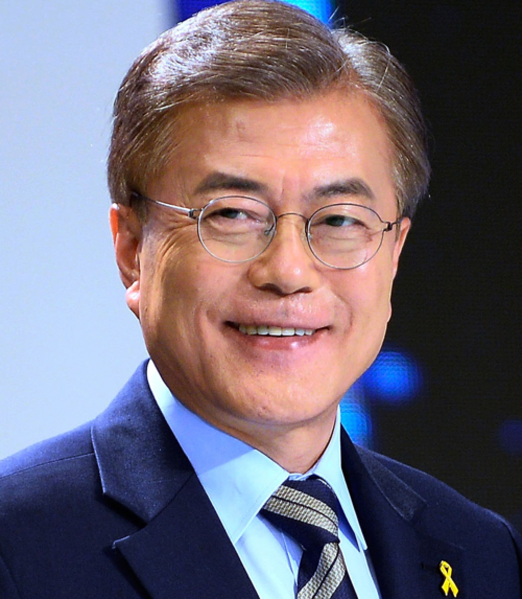

ABOUT
Moon Jae-in (President)
Moon Jae-in (Korean: 문재인; Hanja: 文在寅;born January 24, 1953) is the current president of South Korea, having taken office in 2017. He previously served as chief of staff to
then-president Roh Moo-hyun (2007–2008),leader of the Democratic Party of Korea (2015–2016) and a member of the 19th National Assembly (2012–2016).Moon was elected president in 2017 as the Democratic Party's candidate following the impeachment and removal of Park Geun-hye.As president, Moon Jae-in has achieved international attention for his meetings with North Korean chairman Kim Jong-un at inter-Korean summits
in April, May, and September 2018, making him the third South Korean president to meet their North Korean counterpart.Moon's administration has focused on increasing South Korea's consumption of natural gas, away from nuclear and coal as sources of energy.Moon's response to the COVID-19 pandemic have been praised both domestically and internationally.[16] In the first few weeks of March 2020, daily cases fell from 800 to fewer to 100,
reducing daily cases by more than 90% at its peak.
.
HISTORY
Is the capitaland largest metropolis of South Korea. Seoul was the capital of various Korean states, including Baekje, Joseon, the Korean Empire, Goryeo (as a secondary capital), and presently South Korea. Strategically located along the Han River, Seoul's history stretches back over two thousand years, when it was founded in 18 BC by the people of Baekje, one of the Three Kingdoms of Korea. The city was later designated the capital of Korea under the Joseon dynasty. Seoul is surrounded by a mountainous and hilly landscape,
with Bukhan Mountain located on the northern edge of the city.The history of the city of Seoul dates back approximately 2,000 years, to when Wiryeseong, the capital of Baekje, was located on the banks of the Hangang River in the southeastern part of what is now Seoul.
Development of the city began in earnest once it was appointed the capital of the Joseon Dynasty (1392 - 1910) in 1394.
The framework for modern-day Seoul began to emerge as the construction of electrical facilities, railroads, streetcar tracks, parks, waterworks systems, schools, and hospitals commenced at the end of the 19th century with the opening of the port. However, Seoul soon came under the influence of Japanese colonialism (1910 - 1945).
FACTS
- 1.Lotte World is the major recreation center in Seoul,home to the largest indoor theme parks
- 2.Red ink is considered badluck. Writing a persons name in Red ink signifies that the person will die soon
- 3.Before the age of 30 men are expected to commit to 21-24 months of military service even CELEBRITIES!!!
- 4.Children born in South Korea are considered one year old when they are born.